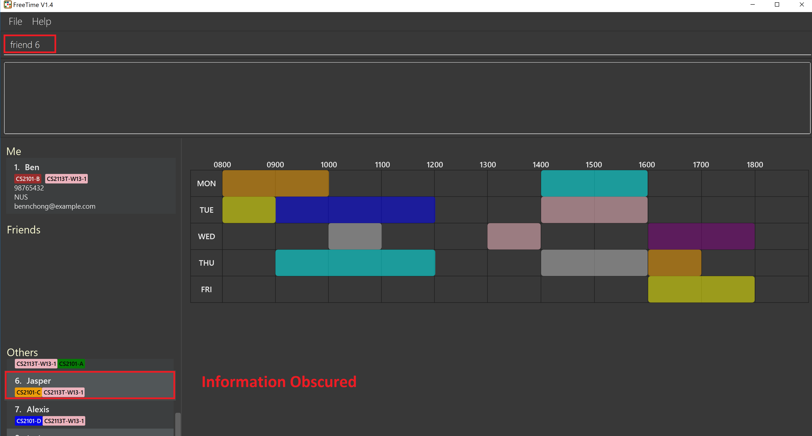

By: W13-1 Since: Sept 2018 Licence: MIT
- 1. Introduction
- 2. Quick Start
- 3. Features
- 3.1. Security
- 3.2. Viewing help :
help(h) - 3.3. Listing all persons :
listall(l) - 3.4. Editing a person :
edit(e) (DOES NOT WORK IN V1.3) - 3.5. Locating persons by name :
find(f) - 3.6. Locating persons by group :
group(t) - 3.7. Add a timeslot to your timetable:
addtime(at) - 3.8. Delete a timeslot from your timetable:
deletetime(dt) - 3.9. Selecting a person :
select(s) - 3.10. Adding a person to your friend list :
friend(af) - 3.11. Removing a person from your friend list :
unfriend(uf) - 3.12. Show free slots among selected people:
free - 3.13. Listing entered commands :
history(g) - 3.14. Undoing previous command :
undo(u) (DOES NOT WORK IN V1.3) - 3.15. Redoing the previously undone command :
redo(r) (DOES NOT WORK IN V1.3) - 3.16. Clears your timetable :
clear(c) - 3.17. Import Timetable :
import(im) - 3.18. Export Timetable :
export(ex) - 3.19. Exiting the program :
exit(x) - 3.20. Saving the data
- 4. FAQ
- 5. Command Summary
1. Introduction
FreeTime is a desktop app that allows you to find free timeslots to meet team members for projects. More specifically, it helps you identify the times during which everyone you want to meet is free. FreeTime is optimized for those who prefer to work with a Command Line Interface (CLI) while still having the benefits of a Graphical User Interface (GUI). Interested? Jump to the Section 2, “Quick Start” to get started. Enjoy!
2. Quick Start
-
Ensure you have Java version
9or later installed in your Computer. -
Download the latest
FreeTime.jarhere. -
Copy the file to the folder you want to use as the home folder for your application.
-
Double-click the file to start the app. The GUI should appear in a few seconds.
-
You should be on the FreeTime’s login screen, as follows:
 Figure 1. Window of FreeTime during first start-up
Figure 1. Window of FreeTime during first start-up -
If it is the first time you are using the app, follow the instructions on-screen to create your account and press Enter to execute it.
-
After registering or logging in, you will be brought into FreeTime's main screen
 Figure 2. Window of the Main Screen of FreeTime after logging in
Figure 2. Window of the Main Screen of FreeTime after logging in -
Refer to Section 3, “Features” for details of each command.
3. Features
Command Format
-
Each command has an alias (given in round brackets after the command word) that can be used to replace the full command word. e.g.
find Johnis equivaluent tof John. -
Words in
UPPER_CASEare the parameters to be supplied by the user e.g. inadd n/NAME,NAMEis a parameter which can be used asadd n/John Doe. -
Items in square brackets are optional e.g
n/NAME [t/TAG]can be used asn/John Doe t/friendor asn/John Doe. -
Items with
… after them can be used multiple times including zero times e.g.[t/TAG]…can be used ast/friend,t/friend t/familyetc. -
Parameters can be in any order e.g. if the command specifies
n/NAME p/PHONE_NUMBER,p/PHONE_NUMBER n/NAMEis also acceptable.
3.1. Security
The timetable content is locked, and it requires a user to either login with a pre-existing account, or register a new one.
| The application has a default user with username: test and password: test |
There are five security related commands that can be entered on this command line:
-
login -
register -
ui -
logout(Only when you have logged in) -
exit
At this page you will have to enter your credentials to log in. Only then would you be able to edit and view your own timetable,
and view your friends' timetable.
|
Friends are other users that you have "friended", and all users start off without
having any friends. |
The timetable that belongs to users that are not your friends will not be available to you, till you add them as friends.
3.1.1. Logging In: login
Command: login [username] [password]
Examples:
-
login test test
Logins with Username: test and Password: test -
login tim tam
Logins with Username: tim and Password: tam
|
Constraints: * Username and Password must not contain any spaces |
3.1.2. Registering: register
Command: register [Username] [Password] [Email] [MobilePhone] [Address]
Examples:
-
register tim tam tim@tam.com 88888888 Tammy
|
Constraints: * Currently all fields must not have spaces too * All fields must be entered |
3.1.3. Showing the UI Interface: ui
Command: ui
Entering the command ui will have the Login Window to appear as seen from the figure 2.

Clicking on the Register button changes the pop up box to the Registration Window

3.1.4. Logging Out : logout
Command: logout
To be able to use this command, you would have to be logged in in the first place. Referring to the figure 4, there is
a logout button on the menu bar at the top of the application. Clicking on that would have the same effect as typing the
command logout.

3.1.5. Closing the Application : exit
Command: exit
This command closes the application without logging you out. It is recommended to logout before doing this, or the changes to your timetable might be lost.
3.3. Listing all persons : listall (l)
Shows a list of all persons in the address book.
Format: listall
3.4. Editing a person : edit (e) (DOES NOT WORK IN V1.3)
Edits your information in the address book.
Format: edit [n/NAME] [p/PHONE] [e/EMAIL] [a/ADDRESS] [t/TAG]…
3.5. Locating persons by name : find (f)
Finds persons whose names contain any of the given keywords.
Format: find KEYWORD [MORE_KEYWORDS]
Examples:
-
find John
ReturnsjohnandJohn Doe -
find Betsy Tim John
Returns any person having namesBetsy,Tim, orJohn
3.6. Locating persons by group : group (t)
Find persons whose group tags match the specified group tags.
Format: group TAGNAME [MORE_TAGNAMES]
Example:
-
group CS2101
Filters both the others list and the friends list to show only users with the group tag "CS2101". -
group CS2101 CS2113T
Filters both the others list and the friends list to show only users with both group tags "CS2101" and "CS2113T".-
By default, FreeTime shows all the users that are using the application, on both the Friends and Others panel.
 Figure 7. FreeTime before executing group command
Figure 7. FreeTime before executing group command -
After executing
group CS2113Tall the users with the tagCS2113Twill be filtered and shown on the respective panels. Figure 8. FreeTime after executing group command
Figure 8. FreeTime after executing group command -
Commands such as
friend,unfriend,free,selectcan now be used on the filtered list.Use the command listallto revert the panels back to its original state.
-
3.7. Add a timeslot to your timetable: addtime (at)
Adds a timeslot to your timetable.
Format: addtime Monday 10:00-12:30
Examples:
-
addtime Monday 10:00-12:30
Adds the timeslot from 10:00 to 12:30 on Monday to your timetable. -
addtime Fri 13:30-14:00
Adds the timeslot from 13:30 to 14:00 on Friday to your timetable. -
addtime Wed 17-18
Adds the timeslot from 17:00 to 18:00 on Wednesday to your timetable.
After adding a timeslot, you should see the following:

3.8. Delete a timeslot from your timetable: deletetime (dt)
Delete a timeslot from your timetable.
Format: deletetime Monday 10:00-12:30
Examples:
-
deletetime Monday 10:00-12:30
Deletes the timeslot from 10:00 to 12:00 on Monday from your timetable. -
deletetime Fri 13:30-14:00
Deletes the timeslot from 13:30 to 14:00 on Friday from your timetable. -
deletetime Wed 17-18
Deletes the timeslot from 17:00 to 18:00 on Wednesday from your timetable.
3.9. Selecting a person : select (s)
Selects your friend with the specified index, showing you their timetable.
Format: select INDEX
Examples:
-
select me
Selects yourself. -
select 2
Selects the 2nd person listed in your friend list. -
find Betsy
select 1
Selects the 1st person in the results of thefindcommand.
3.10. Adding a person to your friend list : friend (af)
Adds a person from the others list to your friend list.
Format: friend INDEX
|
Examples:
-
friend 1
Adds the first user in the others list to your list of friends.-
Before executing the command, your window might look like the following, without friends:
Figure 10. Before adding friend to your friend list. -
After executing
friend 1, there will be a success message and the first person should be added to the friend’s list, as follows: Figure 11. After adding friend to your friend list.
Figure 11. After adding friend to your friend list. -
More information about the user is now shown and commands such as
freecan now be used.
-
3.11. Removing a person from your friend list : unfriend (uf)
Removes a person from your friend list.
Format: unfriend INDEX
Example:
-
unfriend 1
Removes the first user from the friends list.-
Before executing the command, look for the index of the person you would like to remove from your list:
 Figure 12. Before removing friend from friend list.
Figure 12. Before removing friend from friend list. -
After executing
unfriend 1, there will be a success message and the first person should be removed from the friend’s list, as follows: Figure 13. After adding friend to your friend list.
Figure 13. After adding friend to your friend list. -
More information about the user is now shown and commands such as
freecan now be used.
-
3.12. Show free slots among selected people: free
Highlights timeslots where you and everyone specified is free.
Format: free INDEX…
Examples:
-
free 1 2
Highlights timeslots where you, friend 1, and friend 2, are all free to meet up.
After executing the command, you should see the following:

3.13. Listing entered commands : history (g)
Lists all the commands that you have entered in reverse chronological order.
Format: history
|
Pressing the ↑ and ↓ arrows will display the previous and next input respectively in the command box. |
3.14. Undoing previous command : undo (u) (DOES NOT WORK IN V1.3)
Restores the address book to the state before the previous undoable command was executed.
Format: undo
|
Undoable commands: those commands that modify the address book’s content ( |
Examples:
-
delete 1
list
undo(reverses thedelete 1command) -
select 1
list
undo
Theundocommand fails as there are no undoable commands executed previously. -
delete 1
clear
undo(reverses theclearcommand)
undo(reverses thedelete 1command)
3.15. Redoing the previously undone command : redo (r) (DOES NOT WORK IN V1.3)
Reverses the most recent undo command.
Format: redo
Examples:
-
delete 1
undo(reverses thedelete 1command)
redo(reapplies thedelete 1command) -
delete 1
redo
Theredocommand fails as there are noundocommands executed previously. -
delete 1
clear
undo(reverses theclearcommand)
undo(reverses thedelete 1command)
redo(reapplies thedelete 1command)
redo(reapplies theclearcommand)
3.17. Import Timetable : import (im)
Imports a timetable for the current user from a specified (.ics) file.

Format: import [FILE_NAME]
Example:
-
import my_file
Imports the timetable at(root_folder)\import_export\my_file.ics
(where 'root_folder' is the folder that the application is in.)
| You can obtain your timetable on NUSMODS as an (.ics) file, as shown in the picture below: |

3.18. Export Timetable : export (ex)
Exports the currently-displayed timetable to the specified (.ics) file.
Format: export [FILE_NAME]
Example:
-
export my_file.ics
Exports the displayed timetable to(root_folder)\import_export\my_file.ics
(where 'root_folder' is the folder that the application is in.)
3.19. Exiting the program : exit (x)
Exits the program.
Format: exit
3.20. Saving the data
Application data is saved in the hard disk automatically, every time the data is changed.
There is no need to save manually.
4. FAQ
Q: How do I transfer my data to another Computer?
A: Install the app in the other computer and overwrite the empty data file it creates with the file that contains the data of your previous Address Book folder.
5. Command Summary
-
Clear :
clear -
Edit :
edit [n/NAME] [p/PHONE_NUMBER] [e/EMAIL] [a/ADDRESS] [t/TAG]…
e.g.edit n/James Lee e/jameslee@example.com -
Find :
find KEYWORD [MORE_KEYWORDS]
e.g.find James Jake -
List :
list -
Help :
help -
Select :
select INDEX
e.g.select 2 -
History :
history -
Undo :
undo -
Redo :
redo -
Tag :
tag TAGNAME [MORE_TAGNAMES]
e.gtag CS2101 -
Friend :
friend INDEX
e.g.friend 2 -
Unfriend :
unfriend INDEX
e.g.unfriend 2 -
Add timeslot :
addtime
e.g.addtime mon 10-12 -
Delete timeslot :
deletetime
e.g.deletetime tue 12-14 -
Free time :
free
e.g.free 1 2 3 -
Import Timetable from a file :
import [FILE_LOCATION] -
Export Timetable to a file :
export [FILE_LOCATION]